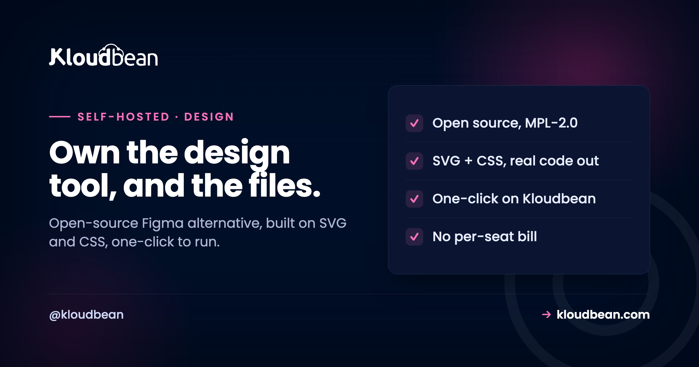

Self-Host Penpot: The Open-Source Figma Alternative That Speaks Code

Most design tools are a black box you rent per editor. Penpot is the opposite: open source, built on the same SVG and CSS the browser already speaks, and designed from day one so developers are not left begging for a handoff. That combination is why teams look at self-hosting it. You stop paying per seat, your design files live on infrastructure you control, and the thing your designers draw in is the same thing your developers can read as code. This is the honest guide to running it yourself, including the parts the quick tutorials skip.
Penpot is an open-source, browser-based design and prototyping tool, a genuine Figma alternative built on open web standards (SVG and CSS) for both designers and developers. Self-hosting it makes sense when you are a team or an agency feeling per-editor pricing, or when design files need to stay on infrastructure you control. It is worth being honest that Penpot is not one of the featherweight self-hosted tools: it runs several services with PostgreSQL and Redis behind them, so give it real memory. On Kloudbean it is a one-click app, so you skip the Docker Compose file and run it on a managed server with a managed database. If you are a solo designer, the hosted free tier is genuinely fine and self-hosting is not worth your evening.
What Penpot actually is
Short version: the open-source design tool that treats developers as first-class users.
Penpot is a design and prototyping platform you use in the browser, on any operating system, with no desktop app to install. It calls itself the first open-source design tool built for cross-domain teams, meaning designers and developers working in the same file rather than throwing assets over a wall. It is open source under the MPL-2.0 licence, so you can read it, run it, and host it yourself without asking anyone.
The detail that matters technically: Penpot is built on open web standards. Designs are SVG under the hood, layouts use real CSS Grid and Flexbox, and the tool can hand developers usable code rather than a screenshot and a shrug. If you have ever watched a pixel-perfect mockup fall apart the moment it met real CSS, that design-to-code alignment is the whole pitch, and it is the thing no proprietary tool quite matches.
Why self-host it, and who shouldn't
Three real reasons to run your own, and one honest case where you shouldn't bother.
The per-seat bill. Proprietary design tools charge per editor, per month, and a growing design team or an agency with many collaborators watches that number climb. A self-hosted Penpot serves everyone from one server at a flat cost, and adding the next editor does not add a line to an invoice. Data sovereignty. Your design files are intellectual property: brand work, unreleased products, client mockups. Self-hosting keeps them on infrastructure you control, which some teams want on principle and some need for client or regulatory reasons. No lock-in. Open source and open standards mean your work is not hostage to one vendor's pricing or roadmap.
Who shouldn't self-host it, said plainly: a solo designer or a tiny team. Penpot's hosted service has a free tier that is genuinely good, and running several services yourself to save nothing is a poor trade of your time. Self-hosting earns its place when the seat count starts to sting, or when someone with a compliance or client-confidentiality reason needs the files in-house. Do not self-host a design tool as a hobby unless you enjoy the hobby.
The design-to-code part, which is the real reason to care
This is where Penpot stops being "free Figma" and becomes its own argument.
Because Penpot is built on SVG and CSS rather than a proprietary rendering model, what a designer builds maps to what a browser renders. Layouts use CSS Grid and Flex, so a developer inspecting a component sees the actual layout system they will write, not an approximation. The handoff, the part of design-and-build that usually leaks time and goodwill, gets shorter because there is less translation.
For an agency or a product team, that is the quiet win of owning Penpot. The design tool and the front-end stack finally speak the same language. Your designers get a capable tool, your developers get real code and real layout intent, and nobody is paying per seat for the privilege. If your work is shipping interfaces, that alignment compounds over every feature.
What it actually takes to run
Time for the honesty the featherweight-tool roundups skip. Penpot is worth running, but it is not tiny.
Where a monitoring tool sips a few hundred megabytes, Penpot is a set of services working together: a frontend, a backend, an exporter that renders your designs, and PostgreSQL and Redis behind them. So it wants a real server with real memory, not the smallest box on the menu. That is not a criticism, it is just the shape of a full design platform, and pretending otherwise is how people end up with a swapping, sluggish instance that makes them blame the software.
Upstream, the documented way to self-host Penpot is Docker and Docker Compose, and the official docs are candid that you need to be comfortable with Docker, DNS, and proxy configuration. That is a fair chunk of setup. On Kloudbean, Penpot is a one-click app, so you skip writing and maintaining the Compose file: you launch it onto a managed server, point a domain at it, and the database and reverse proxy are handled for you. Same Penpot, far less yak-shaving.
The setup, in shape (and the gotcha nobody mentions)
However you install it, a few things decide whether it feels solid or broken.
- HTTPS from the start. Penpot sits behind a reverse proxy that terminates TLS. Use free, auto-renewing SSL so the certificate is never the thing that expires on a Friday. If proxies are unfamiliar, the reverse proxy guide covers the pattern.
- The database. Penpot stores your files and teams in PostgreSQL. Point it at managed PostgreSQL so the design data sits on a database that is backed up and maintained, rather than a container you have to nurse. Redis handles sessions and background work; managed Redis keeps that off your plate too.
- SMTP, the invisible one. This is the setup step people miss and then assume Penpot is broken. Penpot sends email for registration confirmation and team invitations, so if you do not configure a working SMTP account, new users never get their confirmation, invites vanish, and the instance looks dead while being perfectly healthy. Configure email first, then test it by inviting yourself. If port 25 is the problem, why SMTP ports get blocked explains the fix.
- Registration policy. Decide whether the internet can sign up or whether it is invite-only, and set it before you share the URL.
Backing up your design files
Your designs are now your responsibility, and they are worth more than the server they sit on.
Penpot's data lives in two places: the PostgreSQL database holds the files, teams, and structure, and uploaded assets sit in storage. A real backup covers both: a database dump plus the assets, shipped off the server automatically to object storage, on a schedule, with a restore you have actually tested at least once. The wider discipline is in the backups guide, and it applies here with a designer's twist: losing a week of design iteration is its own special pain, so do not learn this lesson the expensive way.
How much of self-Host Penpot is a hosting question
Penpot is a good example of where a managed platform quietly removes the annoying parts. On Kloudbean it is a one-click app, so the Docker Compose file you would otherwise write and maintain is simply not your problem. It runs on a managed server across any of seven clouds, with managed PostgreSQL for the design files, managed Redis for sessions, free auto-renewing SSL for the mandatory HTTPS, automatic backups as the safety net, and object storage for assets, all in one dashboard. When you outgrow the first server, you resize it rather than re-architecting.
The honest boundary: the platform keeps the server, database, SSL, and backups healthy. Your design files, your fonts, your SMTP account, and how you run your design process stay yours. Managed hosting makes Penpot easy to stand up and hard to lose. It does not, and should not, reach into your creative work.
Once self-Host Penpot is settled
For the wider picture of what is worth running yourself, the best self-hosted tools guide. For neighbours in this cluster, self-hosting Nextcloud for files, self-hosting Supabase for an app backend, and self-hosting Postiz for social scheduling, another one-click app. The pieces Penpot leans on: managed PostgreSQL, managed Redis, server backups, and object storage. And if the SMTP step trips you up, blocked SMTP ports explained.
Take it off localhost for good.
Run the app as an always-on process with managed databases, Redis, object storage, and automatic backups beside it. Deploy from Git with live build logs, and keep the infrastructure someone else's problem.
- ✓ Managed databases
- ✓ Always-on processes
- ✓ Object storage
- ✓ Automatic backups
- ✓ Free SSL
- ✓ Git deploy
- ✓ Free migration
FAQ
Is Penpot really a full Figma alternative?
For most UI and UX design and prototyping work, yes. Penpot covers design, components, prototyping, and design systems, and its open-standards foundation gives it a genuine edge on developer handoff. It may not match every advanced feature of the market leader on any given day, but for teams that value open source, no per-seat lock-in, and real design-to-code alignment, it is a serious tool rather than a compromise.
What do I need to self-host Penpot?
A server with real memory, because Penpot runs several services (frontend, backend, exporter) with PostgreSQL and Redis behind them. Upstream you install it with Docker and Docker Compose, which the official docs note requires comfort with Docker, DNS, and proxy setup. On Kloudbean it is a one-click app on a managed server, so you skip the Compose file and the database is managed for you.
Why do my Penpot invitations and sign-ups not work?
Almost always because SMTP is not configured. Penpot sends email for registration confirmation and team invites, so without a working mail setup those emails never arrive and the instance looks broken while being perfectly healthy. Configure a working SMTP account, then test it by inviting yourself. If outbound mail fails, a blocked port 25 is a common cause and there are alternative submission ports.
How much memory does Penpot need?
More than the lightweight tools. It is a set of services plus PostgreSQL and Redis, so it wants a real server rather than the smallest box available. Treat it like a proper application, give it comfortable memory headroom, and it runs smoothly. Starve it and you get a sluggish instance that tempts you to blame the software rather than the sizing.
Where does Penpot store my designs, and how do I back them up?
Your files, teams, and structure live in PostgreSQL, and uploaded assets live in storage. A complete backup is a database dump plus the assets, shipped off the server automatically and restored once so you know the restore works. Using a managed PostgreSQL folds the most important half into an automatic backup routine, and object storage handles the assets.
Is self-hosting Penpot worth it for a solo designer?
Usually not. Penpot's hosted service has a genuinely good free tier, and running several services yourself to save little is a poor use of your time. Self-hosting pays off for teams and agencies feeling per-editor pricing, and for anyone with a client-confidentiality or data-residency reason to keep design files in-house. If that is not you, use the hosted version and spend the evening designing.
Can designers and developers really work in the same Penpot file?
That is the core idea. Penpot is built for cross-domain teams, so designers create while developers inspect real CSS Grid and Flex layouts and pull usable code from the same source of truth. Because it is built on SVG and CSS rather than a proprietary model, what the designer builds maps closely to what the browser renders, which is what shortens the handoff.
Is Penpot a one-click app on Kloudbean?
Yes. Penpot is one of Kloudbean's one-click apps, so you launch it onto a managed server without writing a Docker Compose file, point a domain at it, and let the managed database, SSL, and backups be handled for you. That removes most of the setup friction the upstream Docker route involves while keeping the same self-hosted ownership.